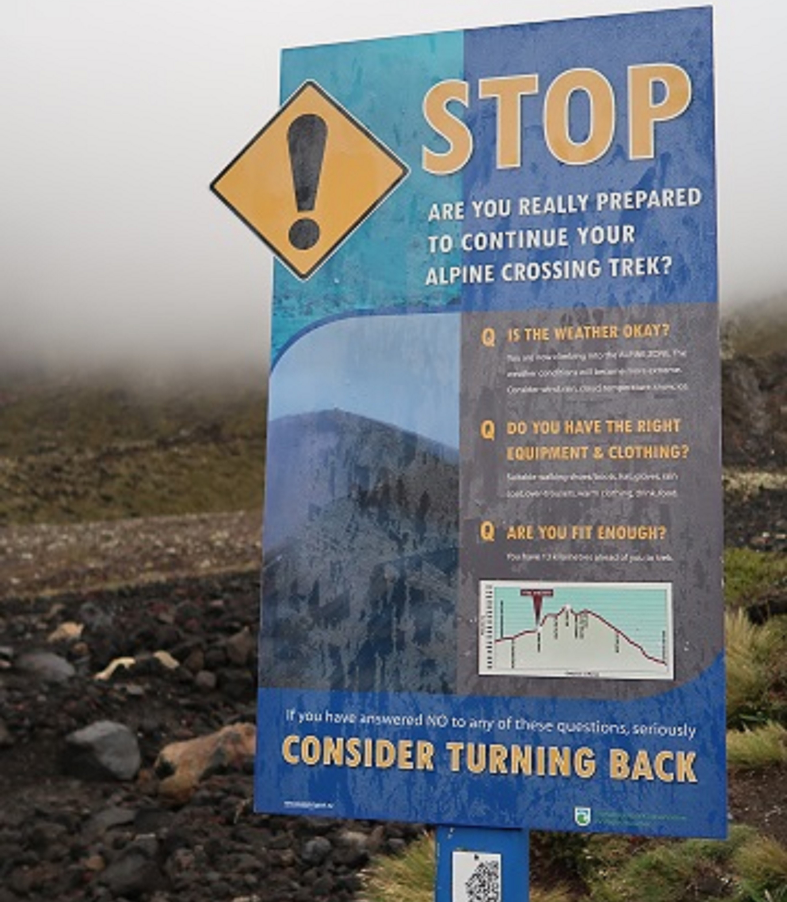
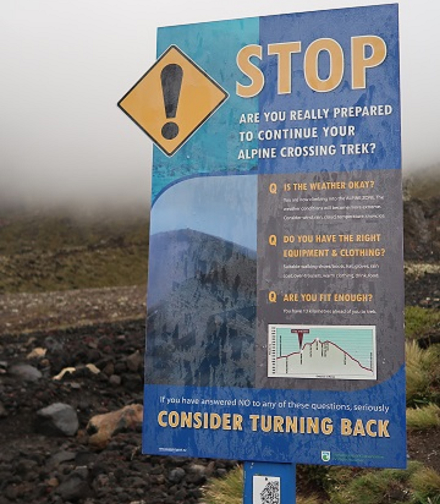

Hiking
Like running, hiking is a great cardio workout and offers an opportunity for you to immerse in nature. People young and old hike year-round. There is something about enjoying the fresh air and being near nature that appeals to so many people.
You can do short or long hikes. Many parks offer more than one trail that range from easy to hard levels of difficulty.

 

Tips for Hiking
- It is important to have good sneakers or hiking shoes. Depending on the trail, you may wear sneakers with good grip but a solid pair of hiking shoes can get you through various weather conditions and rough terrain.
- Do your research beforehand especially if you are new to hiking or to the hiking location.
- Not only is carrying enough water important, but especially on longer hikes, remember to bring the essentials such as food (bring bags you can put trash in as some parks do not have trash cans on the trail), hat or cap, sunglasses, sunscreen, etc.
- Weather conditions in some parks may change drastically as you go up in altitude, so remember to bring layers as needed. Wear comfortable clothing, preferably with fast-drying fabric.
- Try to do some type of aerobic activity especially if you are going on your first hike. Adjusting to higher altitudes can be challlenging and you may be climbing on some trails, so you want to make sure you are fairly fit to handle physical conditions.
- Pay attention to directions. It is crucial to read any signs which give you directions or warnings of the path up ahead.